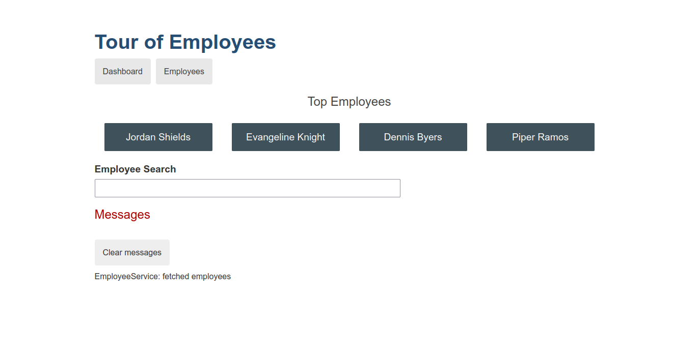
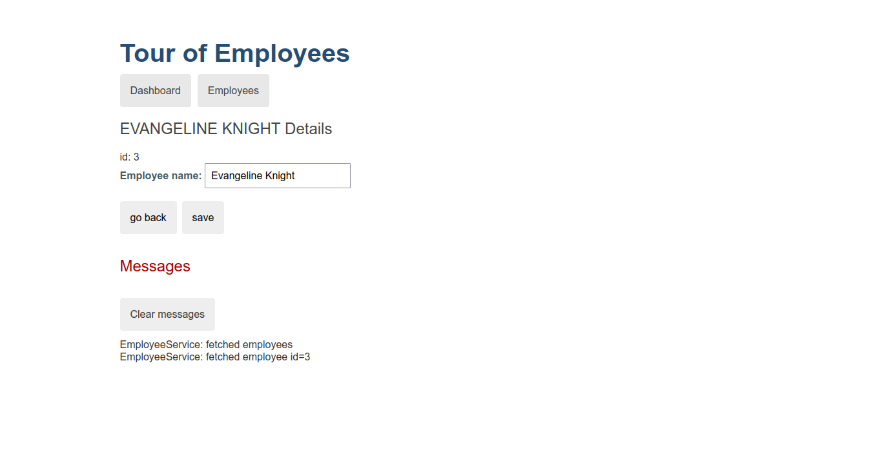
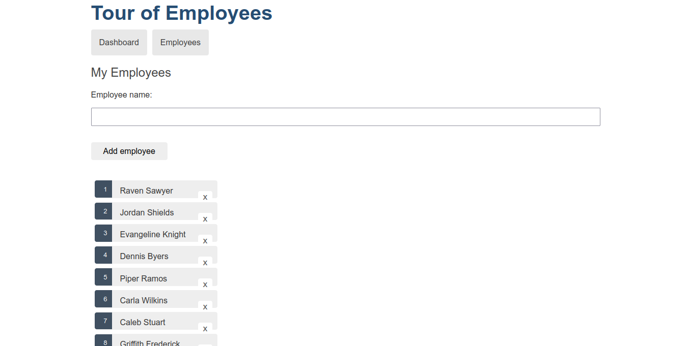
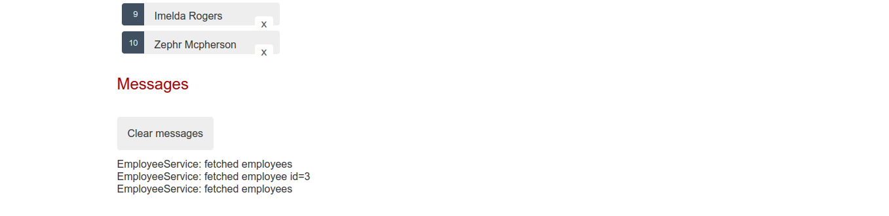

Angular
Introduction
Angular is an application design framework and development platform for creating efficient and sophisticated single-page apps.
Angular is a development platform, built on TypeScript. As a platform, Angular includes:
- A component-based framework for building scalable web applications
- A collection of well-integrated libraries that cover a wide variety of features, including routing, forms management, client-server communication, and more
- A suite of developer tools to help you develop, build, test, and update your code
Angular applications: The essentials
This section explains the core ideas behind Angular.
Components
Components are the building blocks that compose an application. A component includes a TypeScript class with a @Component() decorator, an HTML template, and styles. The @Component() decorator specifies the following Angular-specific information:
- A CSS selector that defines how the component is used in a template. HTML elements in your template that match this selector become instances of the component.
- An HTML template that instructs Angular how to render the component.
- An optional set of CSS styles that define the appearance of the template's HTML elements.
Components also make your application easier to unit test and can improve the overall readability of your code.
Templates
Every component has an HTML template that declares how that component renders. You define this template either inline or by file path.
Angular extends HTML with additional syntax that lets you insert dynamic values from your component. Angular automatically updates the rendered DOM when your component’s state changes.
Dependency injection
Dependency injection allows you to declare the dependencies of your TypeScript classes without taking care of their instantiation. Instead, Angular handles the instantiation for you. This design pattern allows you to write more testable and flexible code.
Basic App using Angular
Tour of Employees
The Tour of Employees application helps an organisation manage its employees. The finished application acquires and displays a list of employees, edits a selected employees details, and navigates among different views of employee data.
Here's a visual idea of what this app does, beginning with the "Dashboard" view and the top employees of the organisation:

You can click the two links above the dashboard ("Dashboard" and "Employees") to navigate between this Dashboard view and a Employees view.
You can search for an employee in the organisation using the Employee Search option.
If you click one of the dashboard employees, the router opens a "Employee Details" view where you can change the employee name also.

Clicking the "Back" button returns you to the Dashboard. Links at the top take you to either of the main views. If you click "Employees", the application displays the "Employees" master list view.

You can add as well as delete employees after you navigate to the Employees view.

At the bottom messages are displayed to let the user know what is going on.
Check out the app at https://saurabh-wandhekar.github.io/Basic-Angular-App/